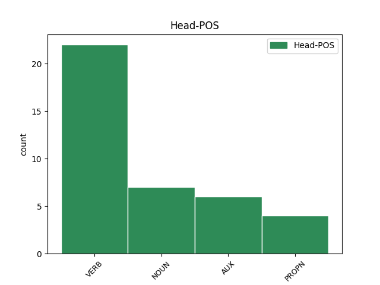

Distribution of features within this leaf

Agreement Rules sorted by frequency.
- When the dependent token is the predicative complements(comp:pred) of the head token, and the head token is VERB and the dependent token is NOUN.
1 ni _ _ _ _ 0 _ _ _
2 ƕashun _ _ _ _ 0 _ _ _
3 izwis _ _ _ _ 0 _ _ _
4 usluto _ _ _ _ 0 _ _ _
5 ƕamma _ _ _ _ 0 _ _ _
6 haidau _ _ _ _ 0 _ _ _
7 unte _ _ _ _ 0 _ _ _
8 niba _ _ _ _ 0 _ _ _
9 qimiþ _ _ _ _ 0 _ _ _
10 afstass _ _ _ _ 0 _ _ _
11 faurþis _ _ _ _ 0 _ _ _
12 jah _ _ _ _ 0 _ _ _
13 andhulids _ _ _ _ 0 _ _ _
14 wairþai _ _ _ _ 0 _ _ _
15 manna _ _ _ _ 0 _ _ _
16 frawaurhtais _ _ _ _ 0 _ _ _
17 sunus _ _ _ _ 0 _ _ _
18 fralustais _ _ _ _ 0 _ _ _
19 sa _ _ _ _ 0 _ _ _
20 andstandands _ _ _ _ 0 _ _ _
21 jah _ _ _ _ 0 _ _ _
22 ufarhafjands _ _ _ _ 0 _ _ _
23 sik _ _ _ _ 0 _ _ _
24 ufar _ _ _ _ 0 _ _ _
25 all _ _ _ _ 0 _ _ _
26 qiþanana qiþan VERB V- Aspect=Perf|Case=Acc|Gender=Masc|Number=Sing|Strength=Strong|Tense=Past|VerbForm=Part|Voice=Pass 0 _ _ _
27 guþ guþ NOUN Nb Case=Acc|Gender=Masc|Number=Sing 26 comp:pred _ ref=2THESS_2.4
28 aiþþau _ _ _ _ 0 _ _ _
29 blotinassu _ _ _ _ 0 _ _ _
30 swaei _ _ _ _ 0 _ _ _
31 ina _ _ _ _ 0 _ _ _
32 in _ _ _ _ 0 _ _ _
33 alh _ _ _ _ 0 _ _ _
34 gudis _ _ _ _ 0 _ _ _
35 gasitan _ _ _ _ 0 _ _ _
1 ni _ _ _ _ 0 _ _ _
2 inu _ _ _ _ 0 _ _ _
3 mitaþ _ _ _ _ 0 _ _ _
4 ƕopandans _ _ _ _ 0 _ _ _
5 in _ _ _ _ 0 _ _ _
6 framaþjaim _ _ _ _ 0 _ _ _
7 arbaidim _ _ _ _ 0 _ _ _
8 aþþan _ _ _ _ 0 _ _ _
9 wen _ _ _ _ 0 _ _ _
10 habam _ _ _ _ 0 _ _ _
11 at _ _ _ _ 0 _ _ _
12 wahsjandein wahsjan VERB V- Case=Dat|Gender=Fem|Number=Sing|Strength=Weak|Tense=Pres|VerbForm=Part|Voice=Act 0 _ _ _
13 galaubeinai galaubeins NOUN Nb Case=Dat|Gender=Fem|Number=Sing 12 subj _ ref=2COR_10.15
14 izwarai _ _ _ _ 0 _ _ _
15 in _ _ _ _ 0 _ _ _
16 izwis _ _ _ _ 0 _ _ _
17 mikilnan _ _ _ _ 0 _ _ _
18 bi _ _ _ _ 0 _ _ _
19 garaideinai _ _ _ _ 0 _ _ _
20 unsarai _ _ _ _ 0 _ _ _
21 du _ _ _ _ 0 _ _ _
22 ufarassau _ _ _ _ 0 _ _ _
23 ufarjaina _ _ _ _ 0 _ _ _
24 izwis _ _ _ _ 0 _ _ _
25 aiwaggeljon _ _ _ _ 0 _ _ _
26 merjan _ _ _ _ 0 _ _ _
27 ni _ _ _ _ 0 _ _ _
28 in _ _ _ _ 0 _ _ _
29 framaþjaim _ _ _ _ 0 _ _ _
30 arbaidim _ _ _ _ 0 _ _ _
31 du _ _ _ _ 0 _ _ _
32 manwjaim _ _ _ _ 0 _ _ _
33 ƕopan _ _ _ _ 0 _ _ _
1 iþ _ _ _ _ 0 _ _ _
2 weis _ _ _ _ 0 _ _ _
3 dagis dags NOUN Nb Case=Gen|Gender=Masc|Number=Sing 4 comp:pred _ ref=1THESS_5.8
4 wisandans wisan AUX V- Case=Nom|Gender=Masc|Number=Plur|Strength=Weak|Tense=Pres|VerbForm=Part|Voice=Act 0 _ _ _
5 usskawai _ _ _ _ 0 _ _ _
6 sijaima _ _ _ _ 0 _ _ _
7 gahamodai _ _ _ _ 0 _ _ _
8 brunjon _ _ _ _ 0 _ _ _
9 galaubeinais _ _ _ _ 0 _ _ _
10 jah _ _ _ _ 0 _ _ _
11 friaþwos _ _ _ _ 0 _ _ _
12 jah _ _ _ _ 0 _ _ _
13 hilma _ _ _ _ 0 _ _ _
14 wenai _ _ _ _ 0 _ _ _
15 naseinais _ _ _ _ 0 _ _ _
1 jabai _ _ _ _ 0 _ _ _
2 all _ _ _ _ 0 _ _ _
3 leik leik NOUN Nb Case=Nom|Gender=Neut|Number=Sing 4 subj _ ref=1COR_12.17
4 augo augo NOUN Nb Case=Nom|Gender=Neut|Number=Sing 0 _ _ _
5 ƕar _ _ _ _ 0 _ _ _
6 hliuma _ _ _ _ 0 _ _ _
1 swalaud _ _ _ _ 0 _ _ _
2 melis _ _ _ _ 0 _ _ _
3 swe _ _ _ _ 0 _ _ _
4 arbinumja _ _ _ _ 0 _ _ _
5 niuklahs _ _ _ _ 0 _ _ _
6 ist _ _ _ _ 0 _ _ _
7 ni _ _ _ _ 0 _ _ _
8 und _ _ _ _ 0 _ _ _
9 waiht _ _ _ _ 0 _ _ _
10 iusiza _ _ _ _ 0 _ _ _
11 ist _ _ _ _ 0 _ _ _
12 skalka _ _ _ _ 0 _ _ _
13 frauja frauja NOUN Nb Case=Nom|Gender=Masc|Number=Sing 15 subj _ ref=GAL_4.1
14 allaize _ _ _ _ 0 _ _ _
15 wisands wisan AUX V- Case=Nom|Gender=Masc|Number=Sing|Strength=Strong|Tense=Pres|VerbForm=Part|Voice=Act 0 _ _ _
Disagree Examples:
1 iþ _ _ _ _ 0 _ _ _
2 þan _ _ _ _ 0 _ _ _
3 seiþu _ _ _ _ 0 _ _ _
4 warþ _ _ _ _ 0 _ _ _
5 qam _ _ _ _ 0 _ _ _
6 manna _ _ _ _ 0 _ _ _
7 gabigs _ _ _ _ 0 _ _ _
8 af _ _ _ _ 0 _ _ _
9 Areimaþaias _ _ _ _ 0 _ _ _
10 þizuh _ _ _ _ 0 _ _ _
11 namo namo NOUN Nb Case=Nom|Gender=Neut|Number=Sing 12 subj _ ref=MATT_27.57
12 Iosef Iosef PROPN Ne Case=Nom|Gender=Masc|Number=Sing 0 _ _ _
13 saei _ _ _ _ 0 _ _ _
14 jah _ _ _ _ 0 _ _ _
15 silba _ _ _ _ 0 _ _ _
16 siponida _ _ _ _ 0 _ _ _
17 Iesua _ _ _ _ 0 _ _ _
1 was _ _ _ _ 0 _ _ _
2 in _ _ _ _ 0 _ _ _
3 dagam _ _ _ _ 0 _ _ _
4 Herodes _ _ _ _ 0 _ _ _
5 þiudanis _ _ _ _ 0 _ _ _
6 Iudaias _ _ _ _ 0 _ _ _
7 gudja _ _ _ _ 0 _ _ _
8 namin _ _ _ _ 0 _ _ _
9 Zakarias _ _ _ _ 0 _ _ _
10 us _ _ _ _ 0 _ _ _
11 afaram _ _ _ _ 0 _ _ _
12 Abijins _ _ _ _ 0 _ _ _
13 jah _ _ _ _ 0 _ _ _
14 qeins _ _ _ _ 0 _ _ _
15 is _ _ _ _ 0 _ _ _
16 us _ _ _ _ 0 _ _ _
17 dauhtrum _ _ _ _ 0 _ _ _
18 Aharons _ _ _ _ 0 _ _ _
19 jah _ _ _ _ 0 _ _ _
20 namo namo NOUN Nb Case=Nom|Gender=Neut|Number=Sing 22 subj _ ref=LUKE_1.5
21 izos _ _ _ _ 0 _ _ _
22 Aileisabaiþ Aileisabaiþ PROPN Ne Case=Nom|Gender=Fem|Number=Sing 0 _ _ _
1 þanuh _ _ _ _ 0 _ _ _
2 þan _ _ _ _ 0 _ _ _
3 in _ _ _ _ 0 _ _ _
4 menoþ _ _ _ _ 0 _ _ _
5 saihstin _ _ _ _ 0 _ _ _
6 insandiþs _ _ _ _ 0 _ _ _
7 was _ _ _ _ 0 _ _ _
8 aggilus _ _ _ _ 0 _ _ _
9 Gabriel _ _ _ _ 0 _ _ _
10 fram _ _ _ _ 0 _ _ _
11 guda _ _ _ _ 0 _ _ _
12 in _ _ _ _ 0 _ _ _
13 baurg _ _ _ _ 0 _ _ _
14 Galeilaias _ _ _ _ 0 _ _ _
15 sei _ _ _ _ 0 _ _ _
16 haitada _ _ _ _ 0 _ _ _
17 Nazaraiþ _ _ _ _ 0 _ _ _
18 du _ _ _ _ 0 _ _ _
19 magaþai _ _ _ _ 0 _ _ _
20 in _ _ _ _ 0 _ _ _
21 fragibtim _ _ _ _ 0 _ _ _
22 abin _ _ _ _ 0 _ _ _
23 þizei _ _ _ _ 0 _ _ _
24 namo namo NOUN Nb Case=Nom|Gender=Neut|Number=Sing 25 subj _ ref=LUKE_1.27
25 Iosef Iosef PROPN Ne Case=Nom|Gender=Masc|Number=Sing 0 _ _ _
26 us _ _ _ _ 0 _ _ _
27 garda _ _ _ _ 0 _ _ _
28 Daweidis _ _ _ _ 0 _ _ _
29 jah _ _ _ _ 0 _ _ _
30 namo _ _ _ _ 0 _ _ _
31 þizos _ _ _ _ 0 _ _ _
32 magaþais _ _ _ _ 0 _ _ _
33 Mariam _ _ _ _ 0 _ _ _
1 þaruh _ _ _ _ 0 _ _ _
2 was _ _ _ _ 0 _ _ _
3 manna _ _ _ _ 0 _ _ _
4 in _ _ _ _ 0 _ _ _
5 Iairusalem _ _ _ _ 0 _ _ _
6 þizei _ _ _ _ 0 _ _ _
7 namo namo NOUN Nb Case=Nom|Gender=Neut|Number=Sing 8 subj _ ref=LUKE_2.25
8 Swmaion Swmaion PROPN Ne Case=Nom|Gender=Masc|Number=Sing 0 _ _ _
9 jah _ _ _ _ 0 _ _ _
10 sa _ _ _ _ 0 _ _ _
11 manna _ _ _ _ 0 _ _ _
12 was _ _ _ _ 0 _ _ _
13 garaihts _ _ _ _ 0 _ _ _
14 jah _ _ _ _ 0 _ _ _
15 gudafaurhts _ _ _ _ 0 _ _ _
16 beidands _ _ _ _ 0 _ _ _
17 laþonais _ _ _ _ 0 _ _ _
18 Israelis _ _ _ _ 0 _ _ _
19 jah _ _ _ _ 0 _ _ _
20 ahma _ _ _ _ 0 _ _ _
21 weihs _ _ _ _ 0 _ _ _
22 was _ _ _ _ 0 _ _ _
23 ana _ _ _ _ 0 _ _ _
24 imma _ _ _ _ 0 _ _ _
1 þo _ _ _ _ 0 _ _ _
2 auk _ _ _ _ 0 _ _ _
3 launa laun NOUN Nb Case=Nom|Gender=Neut|Number=Plur 5 subj _ ref=ROM_6.23
4 frawaurhtais _ _ _ _ 0 _ _ _
5 dauþus dauþus NOUN Nb Case=Nom|Gender=Masc|Number=Sing 0 _ _ _